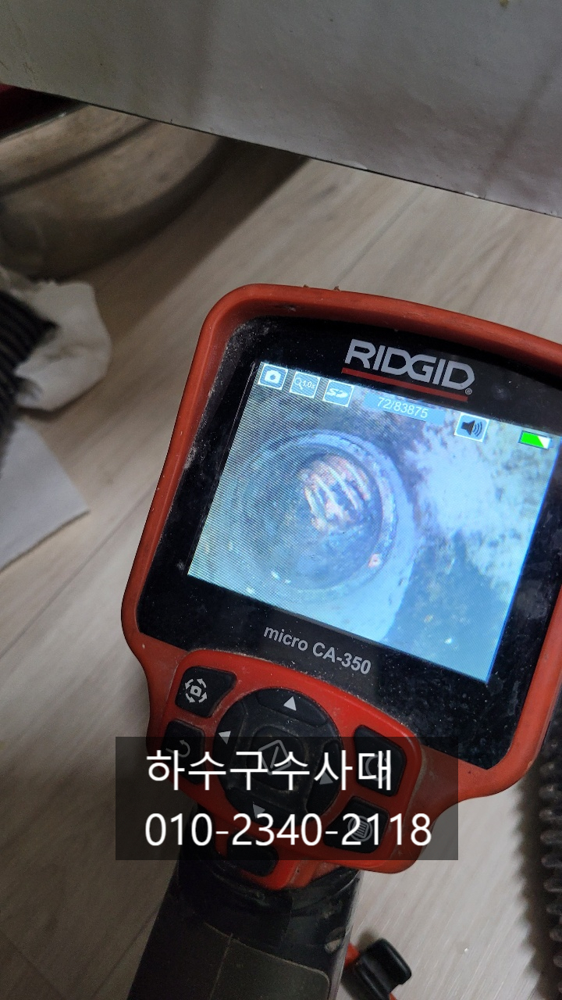
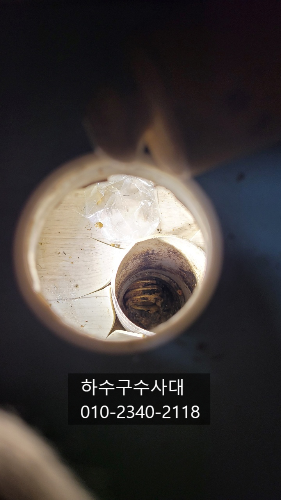
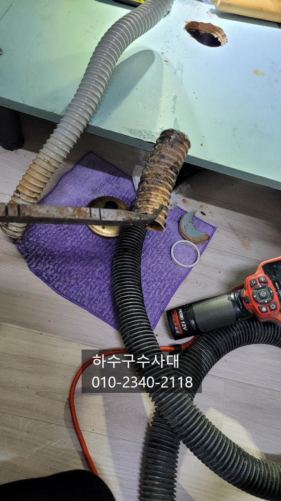
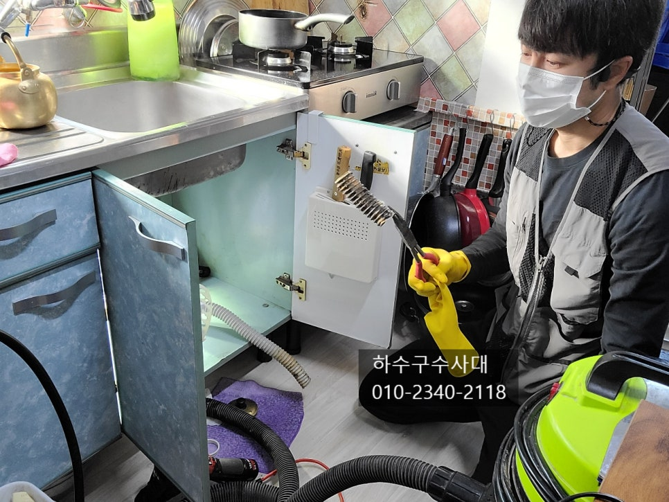
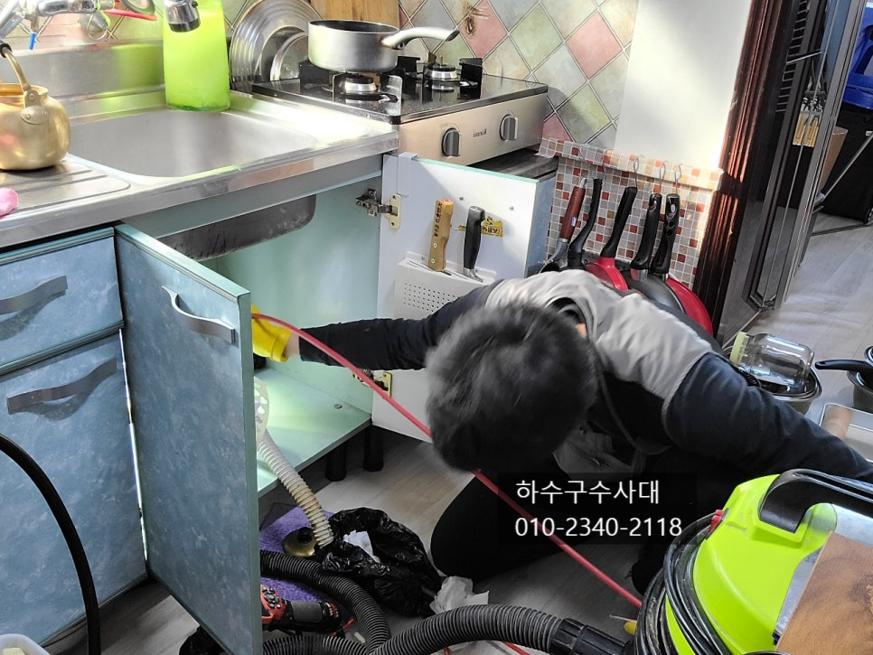
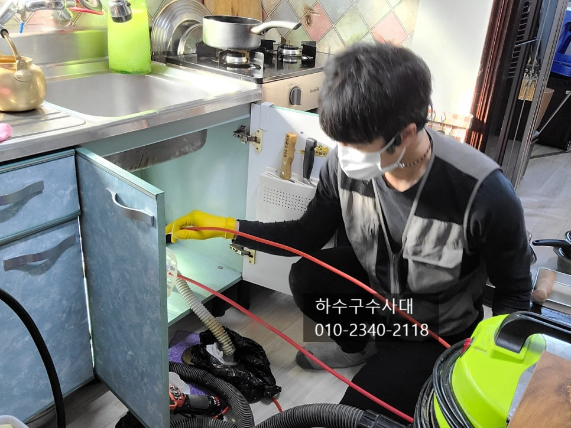
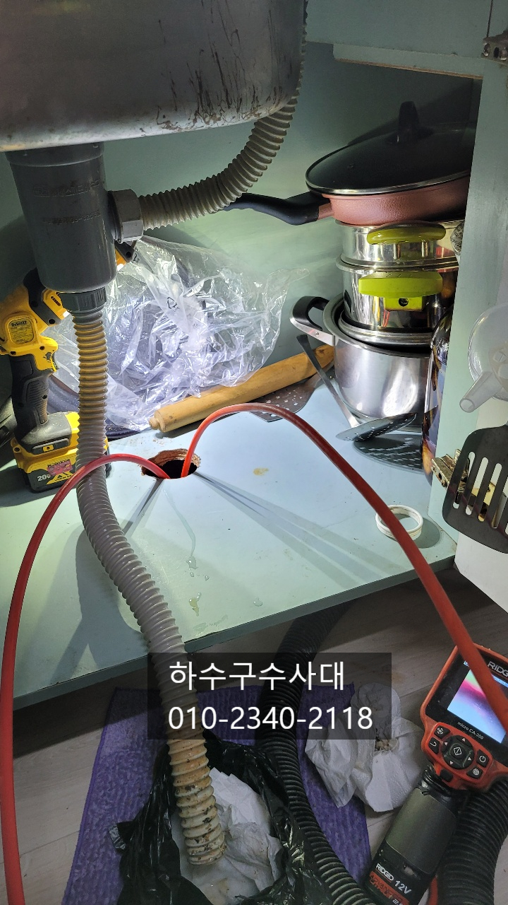

🏠 평택싱크대막힘 싱크대호스 빼는방법
평택 싱크대막힘 전문 시공 후기

📋 작업 개요
- 위치: 평택
- 서비스 유형: 싱크대막힘, 하수구막힘, 배관막힘, 역류해결, 배관청소, 고압세척, 설비공사
- 작업 일시: 2021. 12. 1. 23:56
- 업체명: 하수구수사대 (010-5615-2118)
🔍 문제 상황
평택싱크대막힘 싱크대호스 빼는방법
안녕하세요
싱크대물을 쓰다가 바닥에서
물이 흘러나오면 당황스러운 텐데요
물을 조금씩 틀어놓으면 괜찮은데
많이 내릴때마다 역류하는 증상이
생긴다면 배관에 무언가 막고 있다고
생각하시면 됩니다.
내시경카메라로 배관을 보니 입구쪽에
싱크대호스가 보였어요.
아마 예전에 배수통을 교체하면서 그전에
있던 호스를 빼는 과정에서 끊어졌는데
그냥 모르고 배관에 방치하고 있었습니다.
이렇게 되면 물흐름이 좋지않아 배관에 기름도
잘붙게 됩니다.
우선 배관에 있는 호스를 빼기로 했는데요
다행히 입구쪽에서 잡아 빼면되지만

🔎 원인 분석
💡 전문가 진단: 하수구수사대010-2340-2118
이미 딱딱하게 굳어져 쉽게 나오지는 않습니다.
하지만 이렇게 초입에 있는경우는
배관 깊숙히 있는것 보다는 쉬워요^^
짜~~~잔!!
싱크대호스가 나왔는데요 쉽게
빼지는 못했어요. 뜯기도 하고 빼는과정에서
저 길다란 뺀치에 눈을 맞기도 했습니다. ㅋㅋ
그래도 호스조각이 나와서 다행이네요.ㅎㅎ
어떤 현장은 배관 깊숙한곳에 빠져있거나
여러번 꺽여있는곳에서도 발견 되기도 하는데요
특히 여러번 꺽인곳이 참 빼내기 어려워서
가끔 공사까지 가는 경우도 있답니다.
싱크대호스는 깊게 넣을 필요가 없으니
유의하세요^^
배관안에 남은 기름찌꺼기를 제거하는
작업을 해주었는데요 아무래도
물이 잘 내려가지 않다보니 기름이

🔧 작업 과정
배관에 잘 붙을수 밖에 없습니다.
물도 잘 내려보내주고 기름은 되도록
휴지로 닦아내는게 좋아요.
적어도 한달에 한번쯤은 자기전에
펑크린이나 뚜러펑 같은 세정제를
배관에 넣어주는 관리가 필요합니다^^
요즘은 음식물처리기를 사용하는 가정집이
늘어나고 있는 추세인데요 음식물처리기는
사용할땐 편하지만 갈아낸 음식물이
배관을 타고 흘러나가야되는데 배관기울기가
좋지않다거나 공동배관쪽으로 흘러들어가
오히려 배관에 좋지않은 영향을 주기도 합니다.
요즘 아파트엘레베이터 안내문을 보면
자주보이는데 공용배관이 막혀 저층세대에서
물이 역류하는 피해를 많이 겪는다고 해요.
그래서 아파트도 공용하수배관은 주기적으로
청소를 해주는 곳도 많아졌습니다.
기름기제거 막바지 작업중인데요
보이는것처럼 장비앞에 체인이 달려
회전을하면서 기름기를 모두 제거해줍니다.
내시경카메라로 보면서 작업을 하기때문에
기름기를 모두 제거하는데 효과적인데요
작업을하고 기울기는 어떤지! 배관구조는 어떤지!
확실히 보고나면 관리가 용이하기 때문이에요^^
배관세척이 끝나고나면 물을 받아서
한번에 내려보는데요 이 테스트는 물이
잘내려가는지 확인도 하지만


✅ 작업 완료
연결부위에서 물이 새어나오지는 않는지
확인도 해주는 테스트입니다^^
하수구수사대는 수도권전지역에서
활동하고 있으니 문제가 있으시면
언제든지 연락주세요^^
하수구수사대
010-2340-2118




⚠️ 주방 싱크대 배관 막힘 예방 수칙
- ✅ 기름기가 묻은 식기나 프라이팬은 설거지 전 키친타올로 반드시 기름때를 닦아내세요.
- ✅ 주기적으로 싱크대 개수대에 뜨거운 물을 가득 받아 한 번에 내려 배관 내부 기름을 씻어내세요.
- ✅ 배수구 거름망을 미세한 필터로 사용하시고 음식물 찌꺼기가 틈으로 새어 들지 않게 관리하세요.
- ✅ 베이킹소다와 식초를 뜨거운 물과 함께 일주일에 한 번씩 부어주면 배관 살균과 막힘 예방에 좋습니다.
💡 핵심 정리
- 확실한 장비 작업(내시경 점검 및 샤프트 스케일링)으로 원인을 뿌리 뽑습니다.
- 작업 후 1년 이내에 동일한 부위 재발 시 100% 무상 A/S 서비스를 보장합니다.
- 서울 · 경기 · 인천 전 지역에 24시간 언제든 긴급 출동할 수 있도록 항시 대기 중입니다.
❓ 자주 묻는 질문 (FAQ)
🚨 평택 싱크대막힘 문제로 고민이신가요?
정확한 원인 진단과 확실한 시공으로 재발 없는 해결을 약속드립니다.
24시간 긴급 출동 | 서울 · 경기 · 인천 전지역 | 1년 내 재발 시 무상 A/S